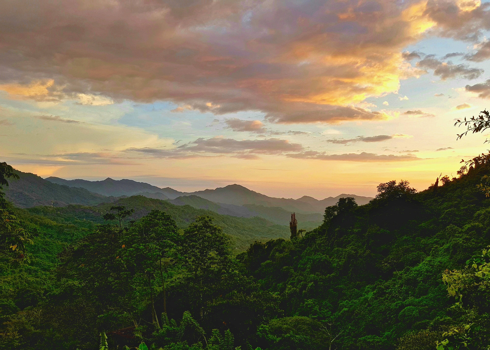
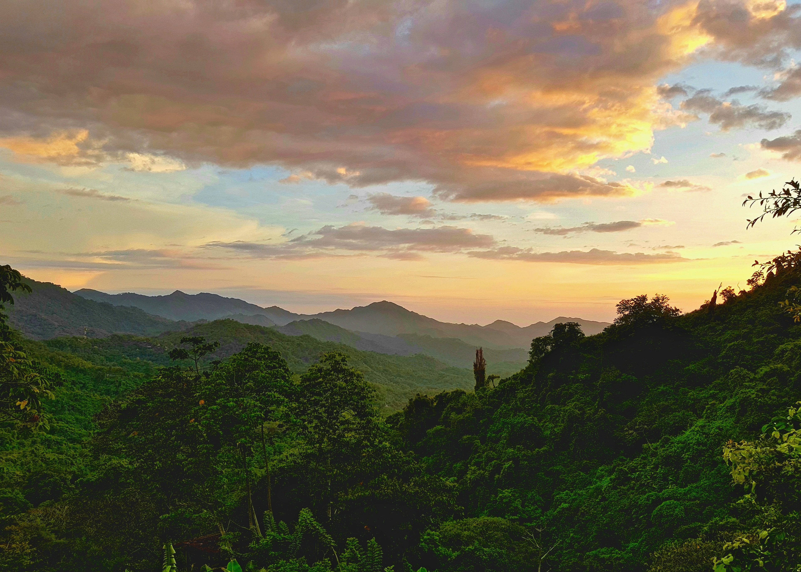

turismo
"As atividades turísticas integram o setor terciário da
economia, responsável por mais de 60% do PIB colombiano. O
número de turistas que chegam à Colômbia aumentou
significativamente na última década, e é hoje de 3,9 milhões
de pessoas por ano, de acordo com dados da ONU."
"As belezas naturais, a riqueza cultural e a história
colombiana são os principais atrativos do país, tendo como
principais pontos de parada:
- Bogotá;
- Medellin;
- Cartagena;
- Cali;
Veja mais sobre "Colômbia" em: https://brasilescola.uol.com.br/geografia/colombia.htm
 
